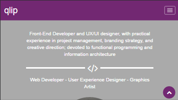
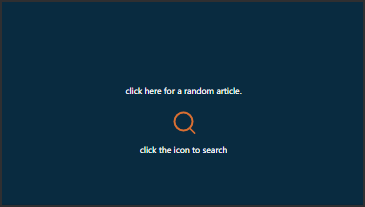
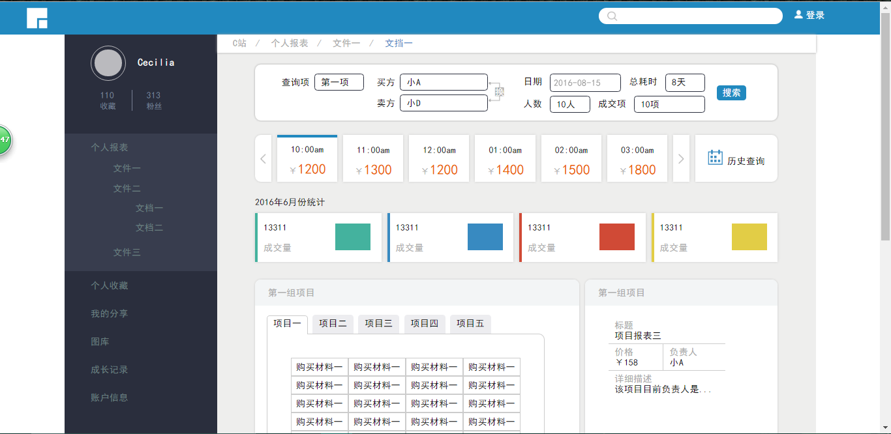
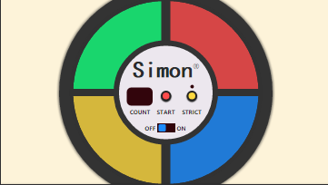
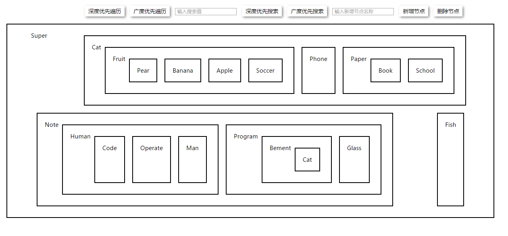
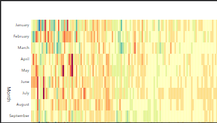
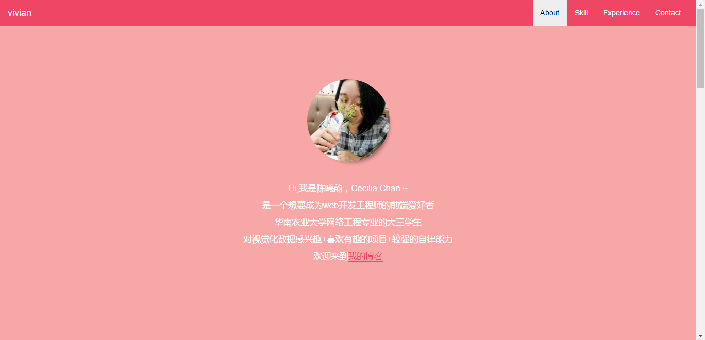

-
- Basic info. 基本信息
- 个人信息: 陈曦韵 / 女 / 20岁
- 常用ID: leocecilia
- 在线简历: resume
-
- Experience. 项目与实习经验
-
proflio page 2016.11 Demo
这是我加入freecodecamp的第一个项目，在这个过程中我主要快速学习使用bootstrap框架，习得响应式的技巧，期间不知道如何进行滚动侦听，于是便去通过查询bootstrap的js插件，第一次接触到了bootstrap的scrollspy.js

-
Wekipedia viewer 2016.11 Demo
这是第二个项目，但确是我第一次接触ajax与api的使用，通过wekipedia的search api获取信息并把其渲染出来。期间遇到了一些比较有意思的设计，比如将放大镜转变成input框的动态效果。期间我get到了使用api的技巧。

-
ife layout 2016.11 Demo
这个小页面本身没有什么技术难度，但是却很考布局能力，此时加深了我对于HTML,css的实战能力。其中在没有用到js的情况下，实现了tab转换

-
Simon game 2016.11 Demo
它的原型是一款电子游戏，第一次接触到了audio，刚开始的时候，频繁受阻，多次点击后，setInterval加速的问题，后来才发现是我对于setTimeout和setInterval的概念不清晰，所以才会导致加速，所以在每次调用setTimeout时，都先将其clearTimeout掉

-
JavaScript & Tree 2016.12 Demo
这是一个树形组件，使用原生js进行编码，实现了遍历和搜索及添加删除节点的功能。编写了一个tree类来实现封装，后来想到其实可以直接操纵Dom节点，因为它的模型本来就是tree嘛，但是在这过程中我更进一步的了解appendChild和removeChild的实现原理

-
the game of the life 2016.12 Demo
这个是模拟细胞自动机的一个模型，通过react框架和SASS写的。花了两三天的时间去看文档，理解react的生命周期，写了些demo，期间也遇到了不少小难题，像是在当点击cell的时候，所绑定的this与this.state会发生冲突。这个时候，我便将click的回调函数写在了最外层的组件App上，然后在Cell通过bind方法来获取this及其他参数

-
Heat Map 2016.12 Demo
这个时候，我开始接触d3.js，这个Heap Map的难点主要是比例尺的设置，刚开始的时候，我就直接将yearData的数据作为作用域了，结果那布局变得一沓糊涂，后来才发现YearData当中有许多重复的值，最后通过调用filter，并且用一一对应的关系将不重复值筛选出来

-
resume 2017.2 Demo
这是我自己设计的在线响应式简历，里面有挺多有意思的设计，包括标签云和css3翻面效果，在这过程中还是遇到挺多困难的，比如3d变换时元素全都出现在同一平面，有些甚至旋转了180度，后来查询才知，是overflow:hidden出的问题；还有是滚动侦听那一块，刚开始怎么都做不出来，结果才发现原来是将body设成100%，在chrome浏览器中无法侦听。至于标签云的实现是较难的部分，我重新捡回了计算机图形学的课本，认真研读，终于将其做出来了，但是还是有一些小bug尚未处理

-
- Skill. 技能清单
Web前端
-
HTML/CSS
能够编写语义化的html，搭配css完成较复杂的布局
熟悉SASS -
Js
原生js其实比较少用，红皮书没看完，但是平时大部分需求都能用jquery实现，不会就google。
所以感觉js基础需要提升，ES6 也没专门学过，下一步js上多下点功夫吧。 -
React
会用React写东西，大概理解diff机制，没阅读过源码，但是看过别人分析的关于React的核心代码
-
d3
会写demo，然后顺便get到了svg的皮毛
其他
-
为了成为一个全栈工程师，现在在学习linux的指令
书看的挺少的，买了一堆书基本都看前面一部分。
挺希望找到一份好工作的，说不希望都是假的。
这就是我，快把我接到碗里来吧^_^

I'm a front end developer！
-
- Contact. 联系方式
- Email: leoceciliachan@gmail.com
- github: github.com/leocecilia
- PhoneNumber: 18819260883
- blog: leocecilia
-
- Application. 应聘岗位
- Web前端实习生
-
- Tech. 技能点
HTMLcssJSJqueryBootstrapD3Reactsvggit
我是一个渴望成为web工程师的前端爱好者,现在正在努力学好它.我选择它的原因是我认为他是编码与艺术的结合,努力成为一个前端工程师